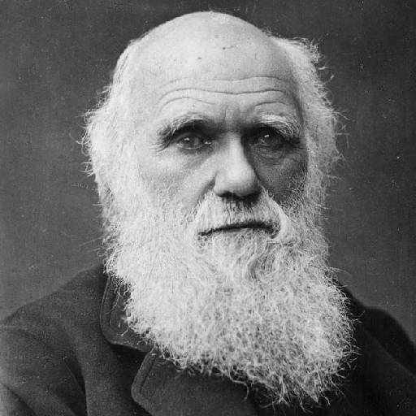
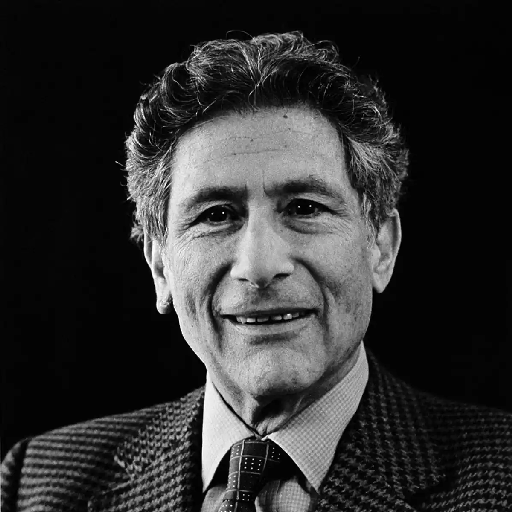
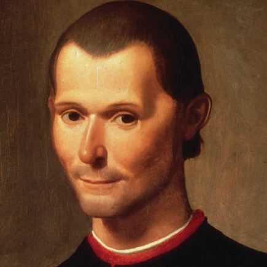
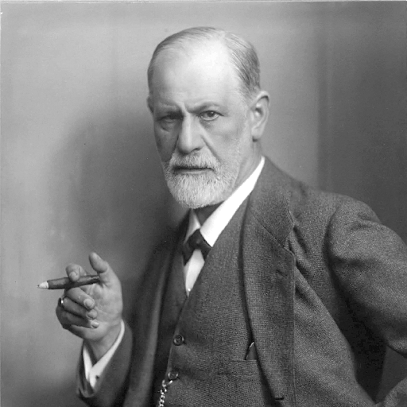
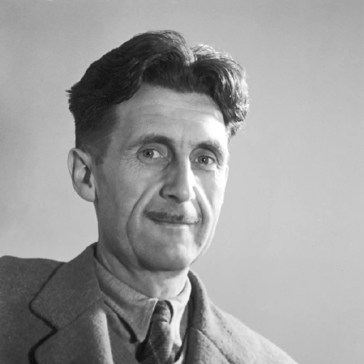
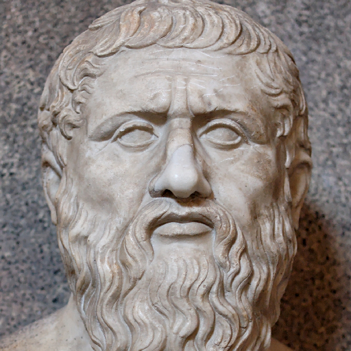
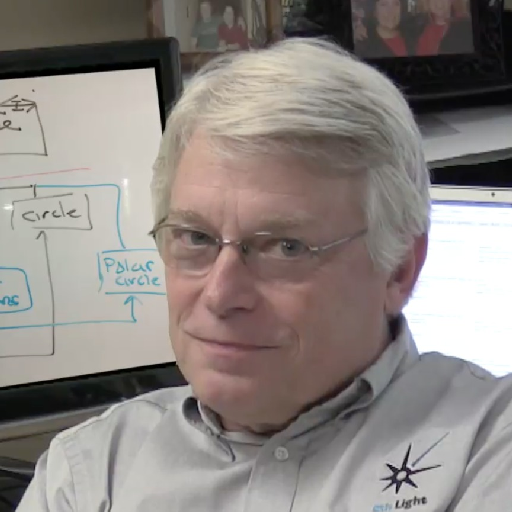
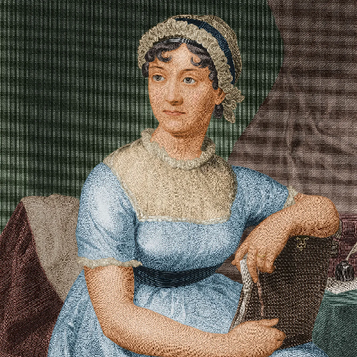
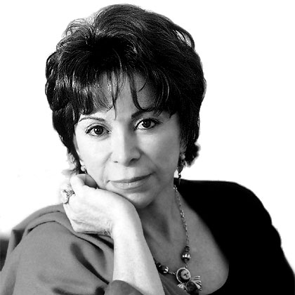

James Stewart
Matemáticas
📚 5 obrasConoce a los creadores detrás de nuestras obras más leídas.
Matemáticas
📚 5 obrasMetodología
📚 3 obrasRedacción
📚 2 obras
Biología
📚 4 obras
Estudios Culturales
📚 2 obras
Filosofía Política
📚 3 obras
Psicología
📚 6 obras
Ciencia Ficción
📚 4 obrasRealismo Mágico
📚 7 obras
Filosofía Clásica
📚 5 obrasDesarrollo Personal
📚 2 obrasHistoria
📚 3 obras
Tecnología
📚 4 obras
Literatura Clásica
📚 6 obrasDivulgación Científica
📚 5 obras
Narrativa Contemporánea
📚 8 obras